프로그램의 의미
지방에서 얻은 세포를 보관하는 프로그램입니다. 대상 여부와 채취 방식은 건강 상태와 진료 판단에 따라 달라 상담에서 확인합니다.
지방 유래 세포의 채취와 분리, 보관 과정을 안내합니다. 적용 대상과 보관 뒤 이용 조건은 상담에서 확인해 주세요.
지방에서 얻은 세포를 보관하는 프로그램입니다. 대상 여부와 채취 방식은 건강 상태와 진료 판단에 따라 달라 상담에서 확인합니다.
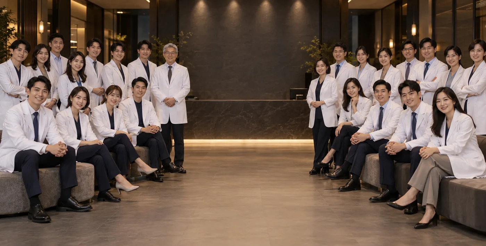
세포는 안내된 절차에 따라 품질을 확인하고 저온 보관합니다. 실제 보관 조건과 기간, 관리 방법은 계약 및 상담 자료에서 확인합니다.
보관 세포의 활용 가능 여부는 현재 상태와 의료진의 판단에 따라 달라집니다. 보관만으로 치료 효과나 결과가 보장되지는 않습니다.
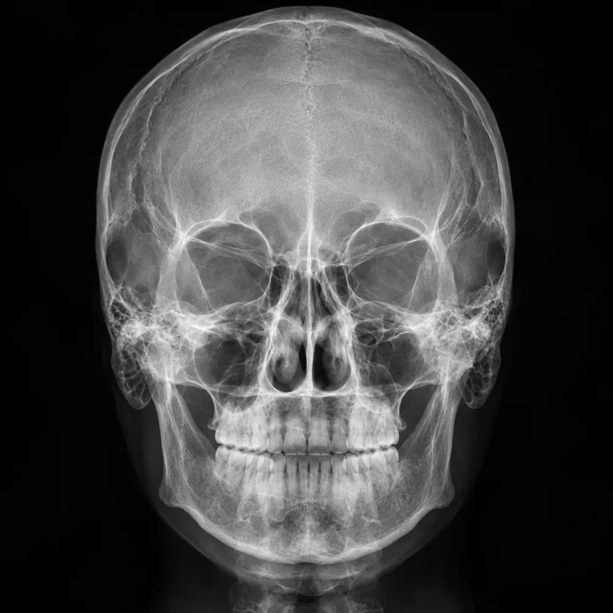
인증의 종류와 적용 범위는 기관과 처리 단계에 따라 다릅니다. 기관명과 유효기간, 적용 범위를 최신 증빙자료로 확인하세요.

연구 결과는 대상과 설계, 기간에 따라 의미가 달라집니다. 연구 자료와 임상 적용 범위를 구분해 확인하세요.

세포 수와 상태는 채취량과 검사 방법에 따라 달라집니다. 결과 수치와 계산 기준, 보관 전후 확인 항목을 상담에서 확인하세요.

처리 용액의 구성과 사용 목적, 근거 자료를 확인하고 의료진에게 적용 범위를 질문하세요.
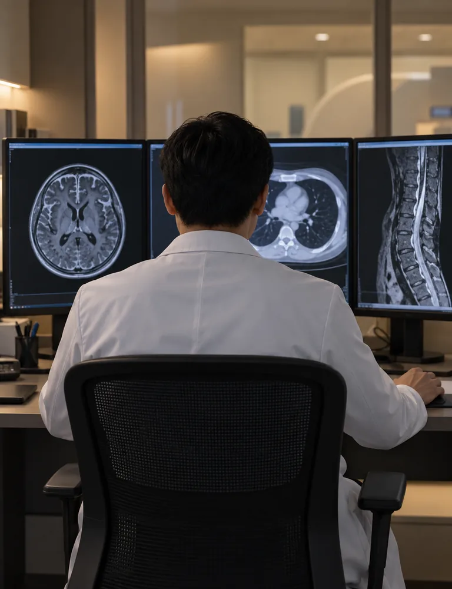
상담 후 채취, 세포 분리, 보관 단계로 진행합니다. 단계별 준비사항과 결과 통보 시점은 개인별 계획에 따라 안내합니다.


상담에서 적합성을 검토한 뒤 채취와 처리, 보관 절차를 설명합니다. 각 단계의 담당 범위와 기록을 확인하고, 보관 이후 이용 조건은 별도로 안내받으세요.
채취 적합성, 비용, 보관 기간, 해동·이용 조건을 질문 목록으로 정리해 상담에서 확인하세요.
이용 비용과 납부 시점, 중단이나 해지 조건은 계약 자료에서 항목별로 확인하세요.
온라인 상담 시작상담 기록에는 현재 건강 상태와 복용 중인 약, 확인이 필요한 항목을 구분해 남겨 주세요.
채취와 보관 단계에서 받은 안내와 담당 연락처를 보관 기록과 함께 확인하세요.


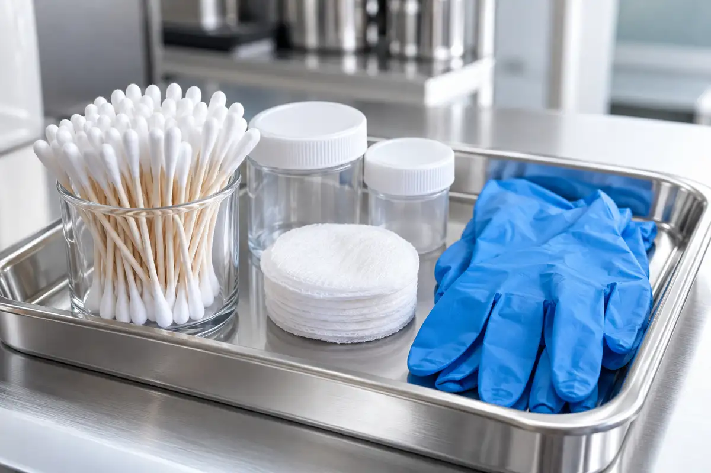
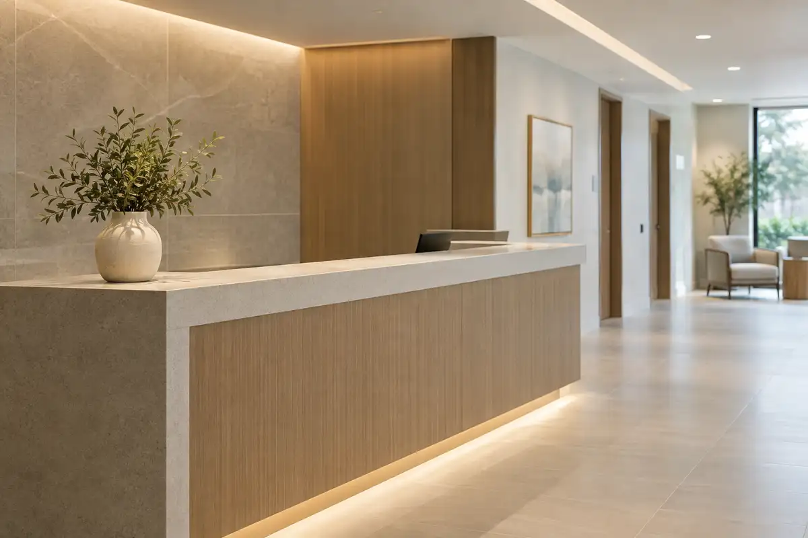


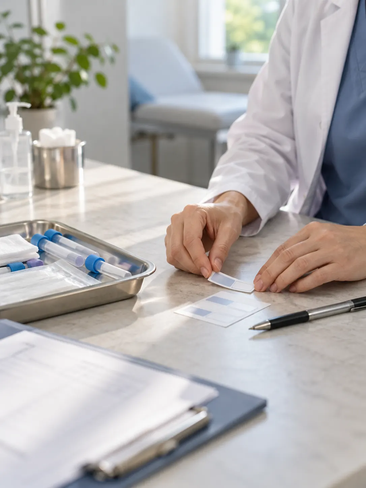
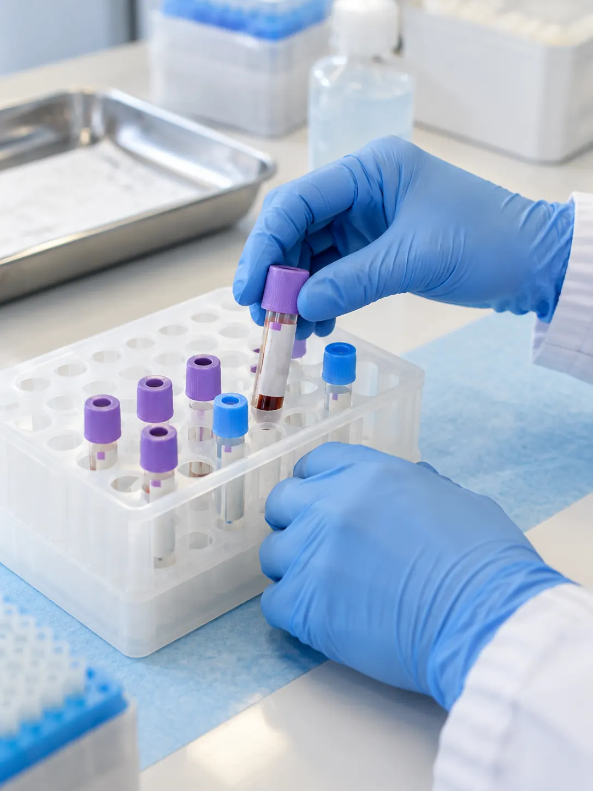


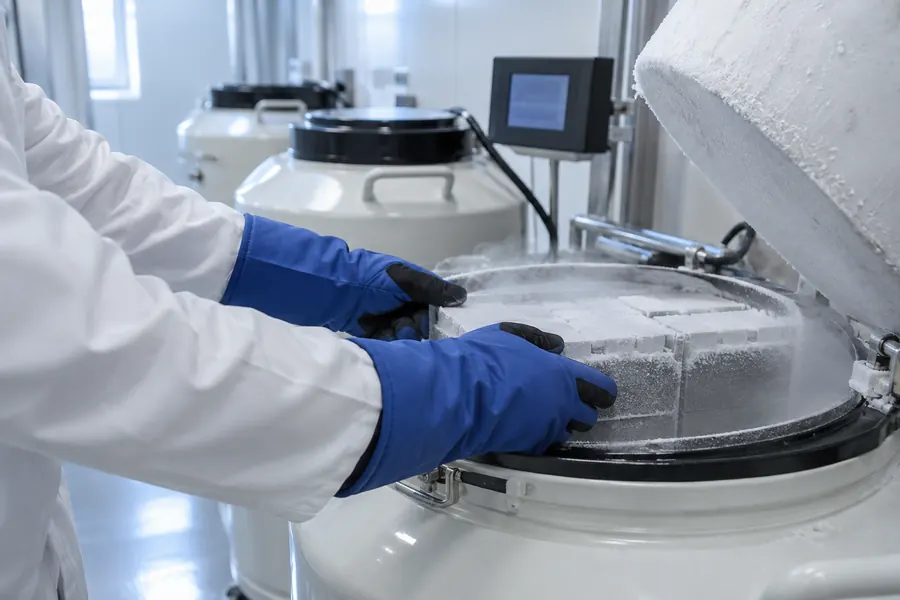
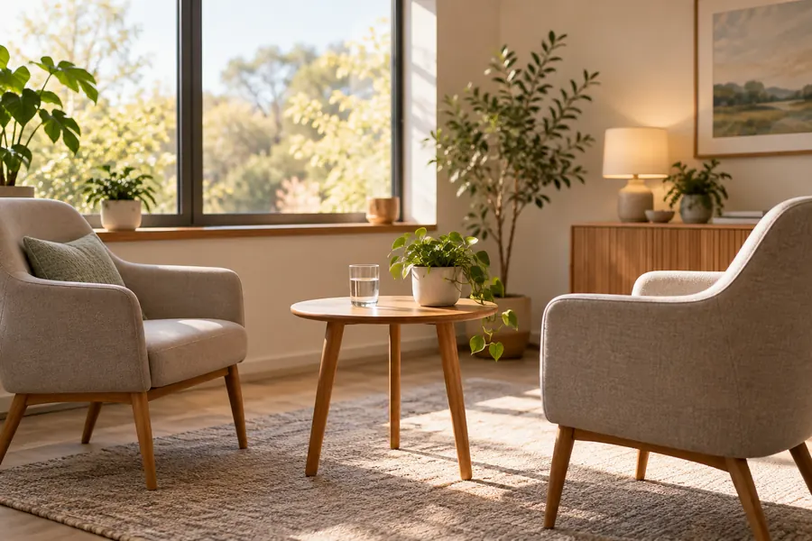


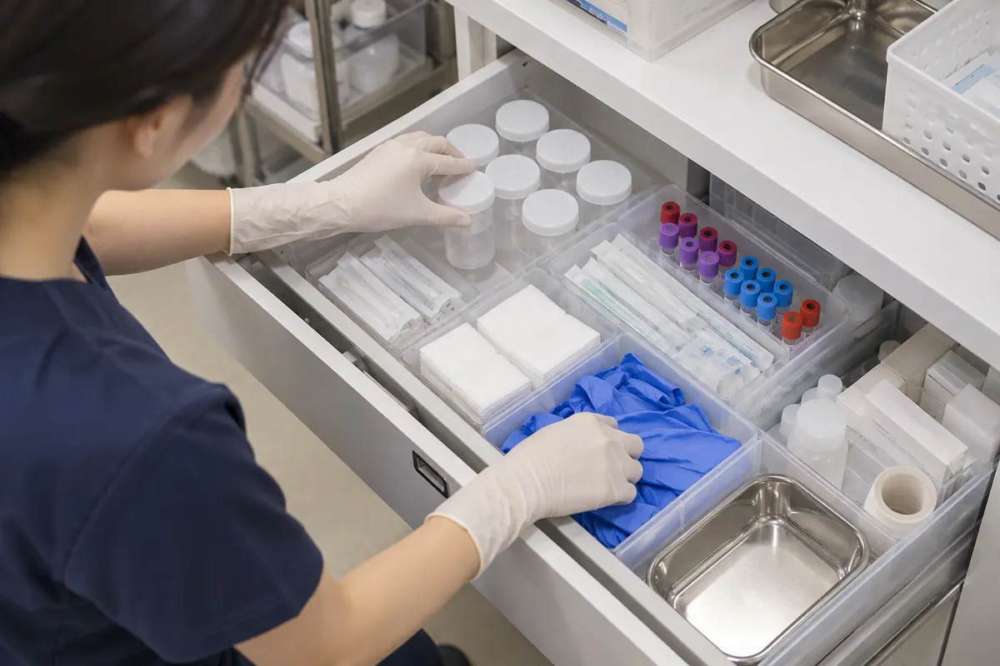
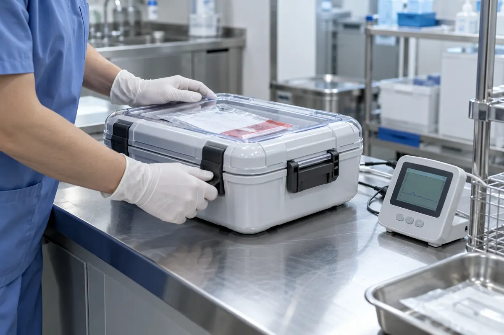
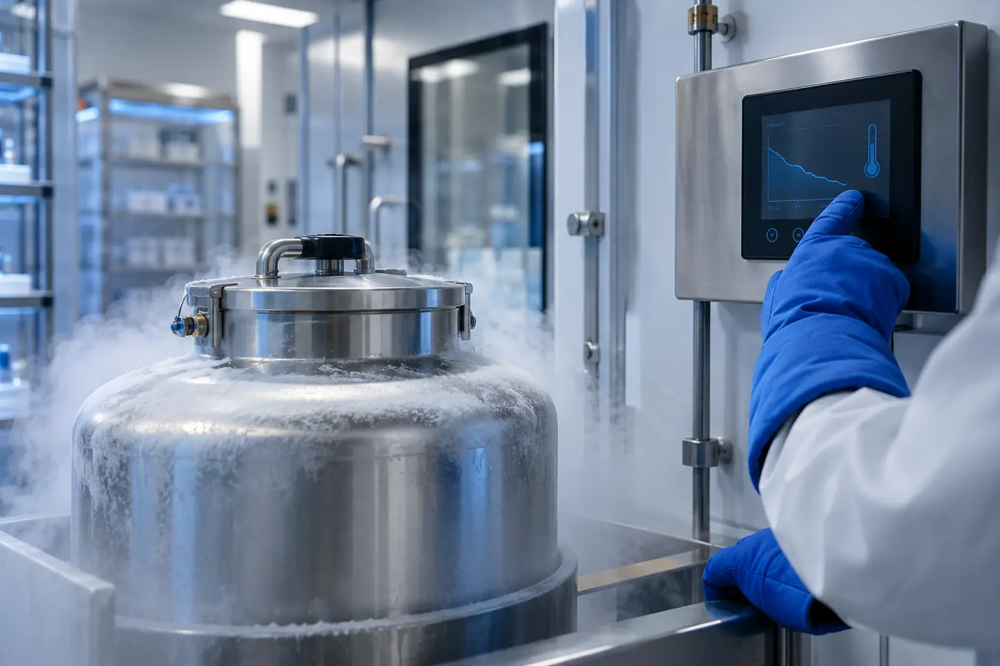


보관 목적과 장기 보관 뒤 이용 조건을 먼저 확인하고, 본인에게 필요한 정보인지 살펴봅니다.
보관 조건과 해동 절차, 이후 이용 시 확인할 사항을 상담 기록에 남깁니다.
희망하는 활용 방향을 의료진에게 알리고, 근거와 제한, 대안에 관한 설명을 함께 확인하세요.
상담 시 현재 건강 상태와 복용 약, 과거 치료 이력을 확인하고 채취 가능 여부를 의료진이 판단합니다.
분리한 세포의 확인 결과와 보관 절차, 기록을 안내받은 뒤 보관 여부를 결정합니다.
처리 과정에서 남기는 검사 항목과 결과를 전달받는 방법도 확인하세요.
보관 기간과 증서 발급 여부, 보관 상태 확인 방법, 이후 문의 경로를 계약 자료에서 확인하세요.
보관 상태를 확인할 연락처와 기록 발급 여부를 보관 서류와 함께 보관하세요.
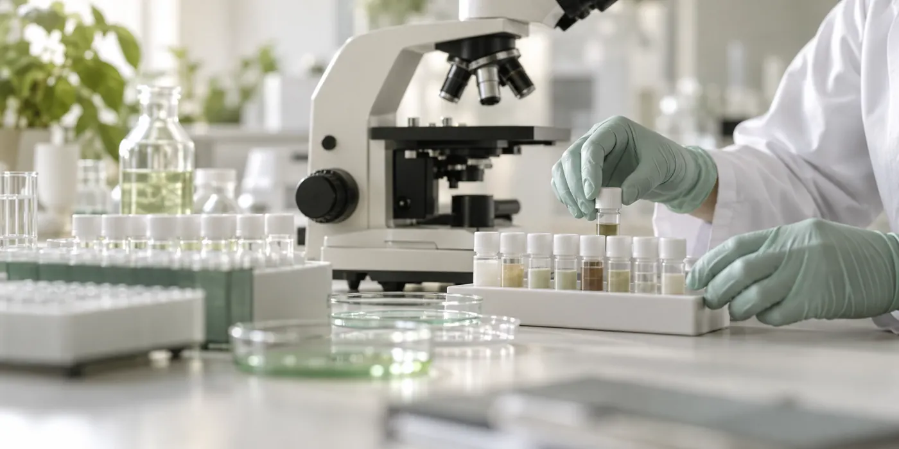
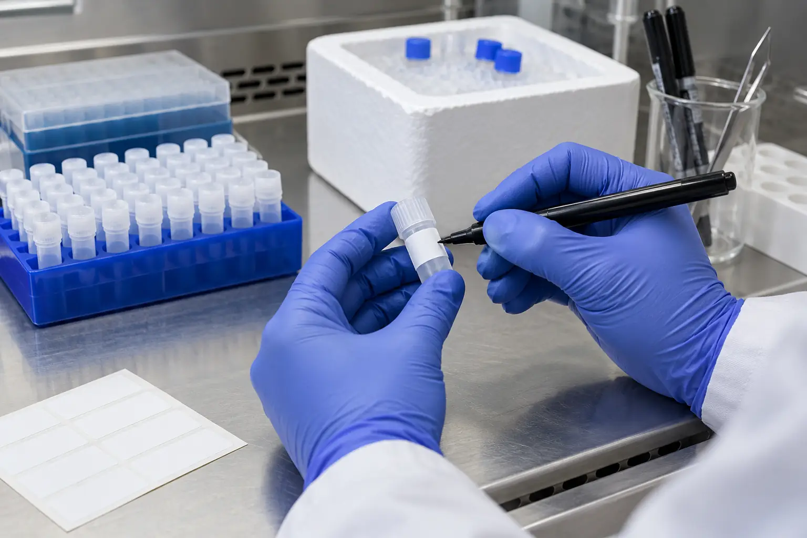
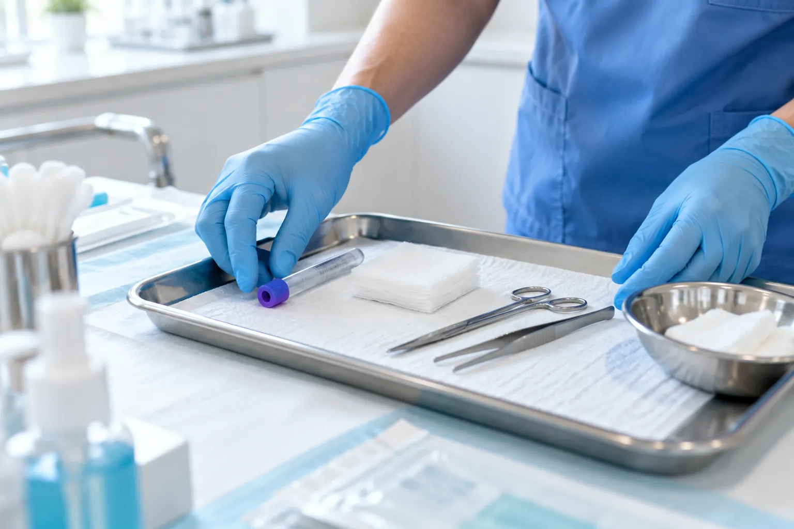